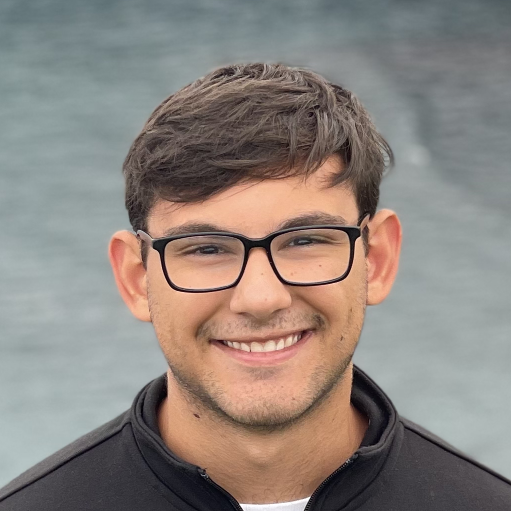

Digital hardware
Processor architecture, RTL design, verification, and FPGA peripherals.
I'm Peter Karlos, a computer engineering student at the University of Illinois Urbana-Champaign. I expect to graduate in December 2027.
I'm interested in computer architecture, embedded systems, and low-level software. My projects include a RISC-V processor, an operating system, FPGA peripherals, and GPU programming.

Processor architecture, RTL design, verification, and FPGA peripherals.
Microcontroller firmware, board design, operating systems, and Linux tooling.
GPU programming, memory optimization, and accelerated computation.
I also work as an ECE 391 course assistant and develop rocket avionics with the Illinois Space Society. Previously, I interned at CACI International and 7 Layer Solutions.